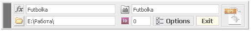
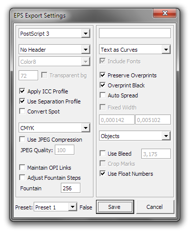

Export to Eps
Sancho / 08.07.2008, 01:45/00:41
Форум:
Макрос для быстрого экспорта в eps

Возможности:
Путь и имя файла можно забить вручную либо оно автоматом подставится от имени файла *.cdr;
Автоматом вставить полученный файл в InDesign (CS2/3) на заданную полосу
Цена макроса символичная - 100RU
Если есть предложения то высказывайтесь...
Добавлено (01.11.2008, 03:26)
---------------------------------------------
...понимаю что все люди занятые, иногда будьте так бобры отвечайте:)
Отличия от полной версии:
Нет настроек.
Битмапы экспортируются как РГБ.
Использование:
должны быть запущены Корел и Индизайн. В Индизайне должен быть открыт документ. В настройках макроса указываем страницу на которую нужно поставить макет. Остальные настройки берутся автоматом от имени и пути cdr файла. Если указать страницу 0, то макрос не будет размещать макет в публикации, а просто сделает экспорт.
Вот скин настроек. Запоминает 3 пресета.

Пора уже мне твой номер кошелька записать,
чтобы постоянно не спрашивать!
Если вебмани у меня остались то сегодня оплачу!
В противном случае возникают проблемы с прозрачностями в документе
Добавлено (02.06.2011, 16:52)
---------------------------------------------
т.е. если нет cdrpreflite, то нужно еще очень много ручками в corel править
"Автоматом вставить полученный файл в InDesign (CS2/3)"